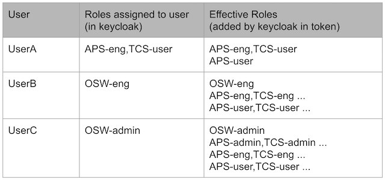

User Interface Gateway
This is provided to give access to all CSW and ESW services and components from browser-based user interfaces.
ESW Gateway with Authentication and Authorization
All TMT users use browser-based user interfaces to interact with the control system, and all TMT users must be authenticated. Once authenticated, they are authorized to use certain commands based on their roles. All UI programs must use the UI Gateway to reach the control system. The UI Gateway provides authorization and authentication in the ESW/CSW system.
ESW UI Gateway is accessible to the outside network and exposes API endpoints through an HTTP interface, hence we need to protect its endpoints from unauthorized access. To better understand the inside and outside network terminology, refer network-topology.
Protection on Command Service Endpoints on Gateway
Each subsystem can control command access using three roles: user, eng, and admin. For example: APS-user, APS-eng, and APS-admin. The user role is the least restrictive, eng role more restrictive, and admin the most restrictive. The eng role is meant for commands that should only be executed by qualified subsystem engineers. The admin command role should be reserved for commands that may damage or otherwise risk equipment. A subsystem is not required to have eng or admin role commands. It’s okay to have only commands that are accessible to all subsystem users.
A TMT user must at least have a subsystem’s user role to be allowed to access commands in a subsystem. By default, all commands are available to a user with the user role unless they are listed in the command map as requiring a more restrictive role. The hierarchy of roles is shown in the following figure:

There are often commands which are more restrictive and should not be accessible to every user. These commands need eng or admin role for the most restricted or dangerous commands. Also, these more restrictive eng commands need a fine-grained control mechanism so that they can be safely executed by authorized person having specific role at subsystem level. To achieve this we have the role hierarchy at subsystem level along with a config table containing the mapping between more restrictive commands and these roles.
This type of role hierarchy is created in Keycloak as one time setup. As per this hierarchy there should be three roles present for each subsystem which are composed in specific order.
- E.g. TCS-admin -> TCS-eng -> TCS-user.
- When you assign a user TCS-eng role, keycloak will automatically add TCS-user role to that user
- When you assign a user TCS-admin role, keycloak will automatically add TCS-eng and TCS-user role to that user
Also, there are three special roles. OSW-admin, OSW-eng and OSW-user which are composed of all respective subsystem level roles.
- E.g. When you assign a user OSW-eng role, keycloak will automatically add roles TCS-eng, APS-eng and so on to that user and these roles will automatically add their respective lower level roles TCS-user, APS-user and so on.
Examples:

Command Role Mapping
Below shown are example entries in config table with commands and roles who can execute those commands.
IRIS.filter.wheel.startExposure: [IRIS-user, APS-eng]
IRIS.filter.wheel.stopExposure: [IRIS-user, APS-eng]
We need to create a config containing role mapping entries like shown above and use it when starting esw-gateway server.
Protection on Sequencer endpoints on Gateway
On protected endpoints of sequencer commands in esw-gateway, {subsystem}-user role check is performed.
- Subsystem is obtained from componentId
- E.g. If current sequence to be executed is for esw.primary then user should have minimum ESW-user role.
Sample Requests
Request without auth token
curl --location --request POST 'http://<host>:<port>/post-endpoint' \
--header 'Content-Type: application/json' \
--data-raw '{
"_type": "ComponentCommand",
"componentId": {
"prefix": "IRIS.filter.wheel",
"componentType": "hcd"
},
"command": {
"_type": "Submit",
"controlCommand": {
"_type": "Setup",
"source": "CSW.ncc.trombone",
"commandName": "startExposure",
"maybeObsId": [
"2020A-001-123"
],
"paramSet": []
}
}'
Request with auth token
curl --location --request POST 'http://<host>:<port>/post-endpoint' \
--header 'Content-Type: application/json' \
--header 'Authorization: <bearer token> \
--data-raw '{
"_type": "SetLogLevel",
"componentId": {
"prefix": "CSW.ncc.trombone",
"componentType": "HCD"
},
"level": "ERROR"
}'
Protection on Admin endpoints on Gateway
On protected endpoints of admin API in esw-gateway, esw-user or {subsystem}-eng role check is performed.
- Subsystem is obtained from
componentIdfor which admin api action needs to be performed. - E.g. To shutdown
SequenceComponentof prefixIRIS.compusing gateway, user should have minimumesw-useroriris-engrole.